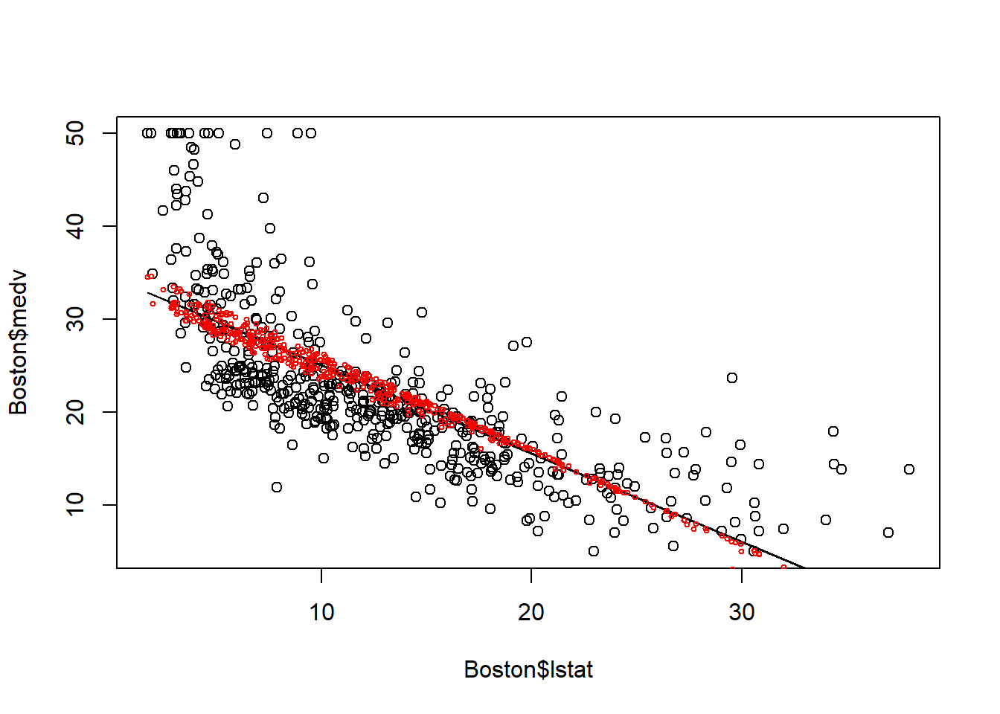
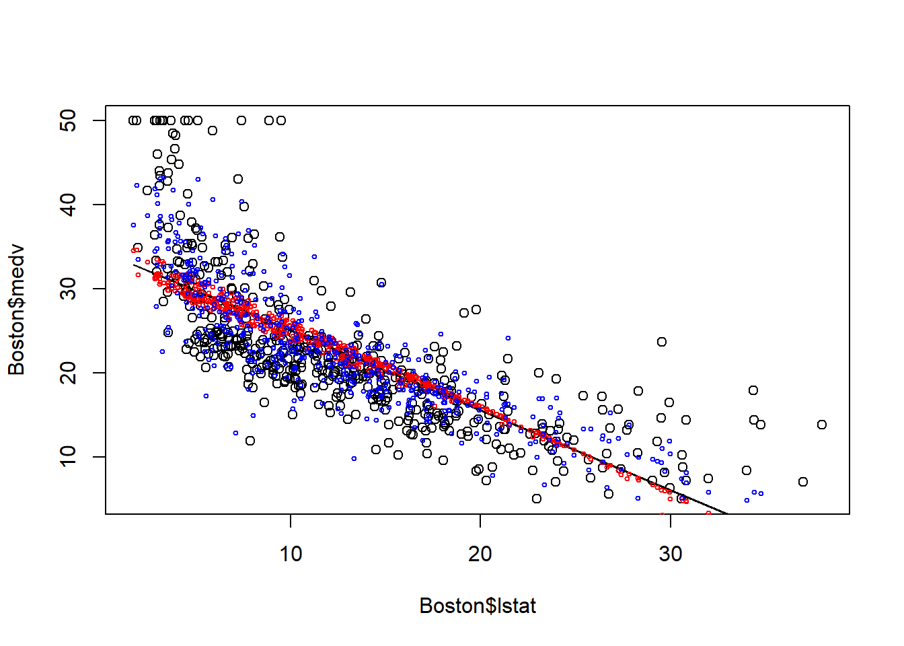
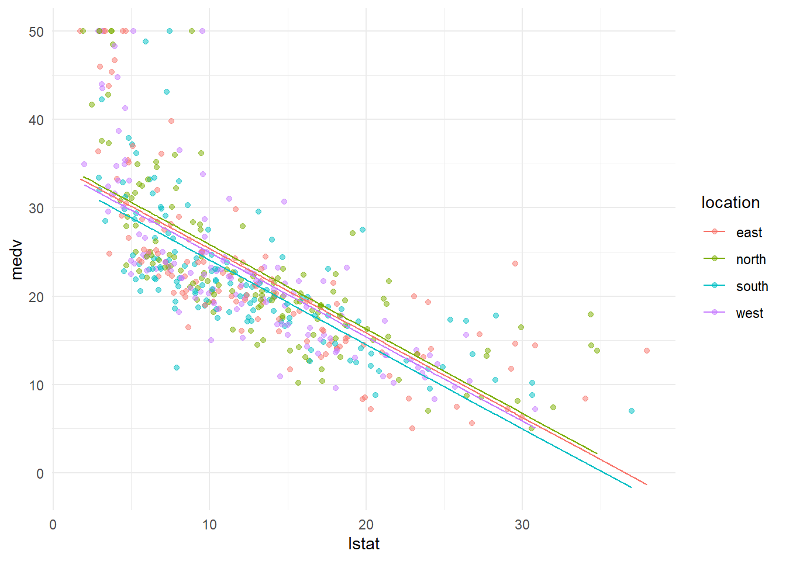
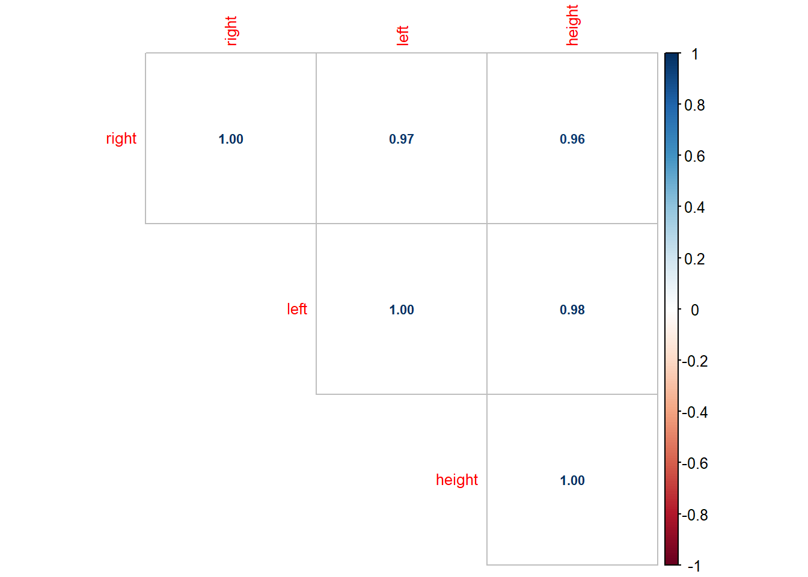
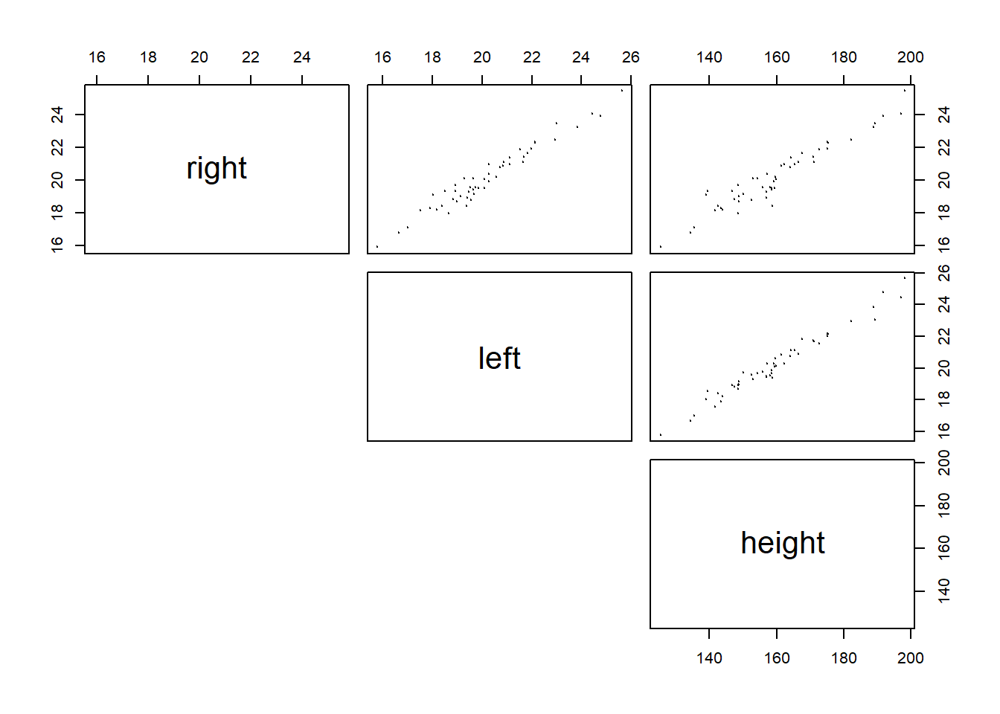
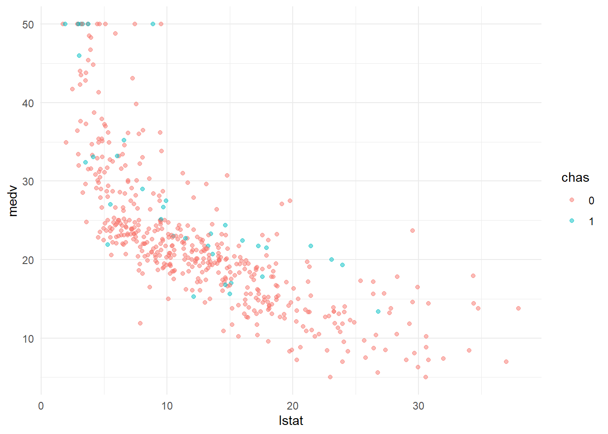
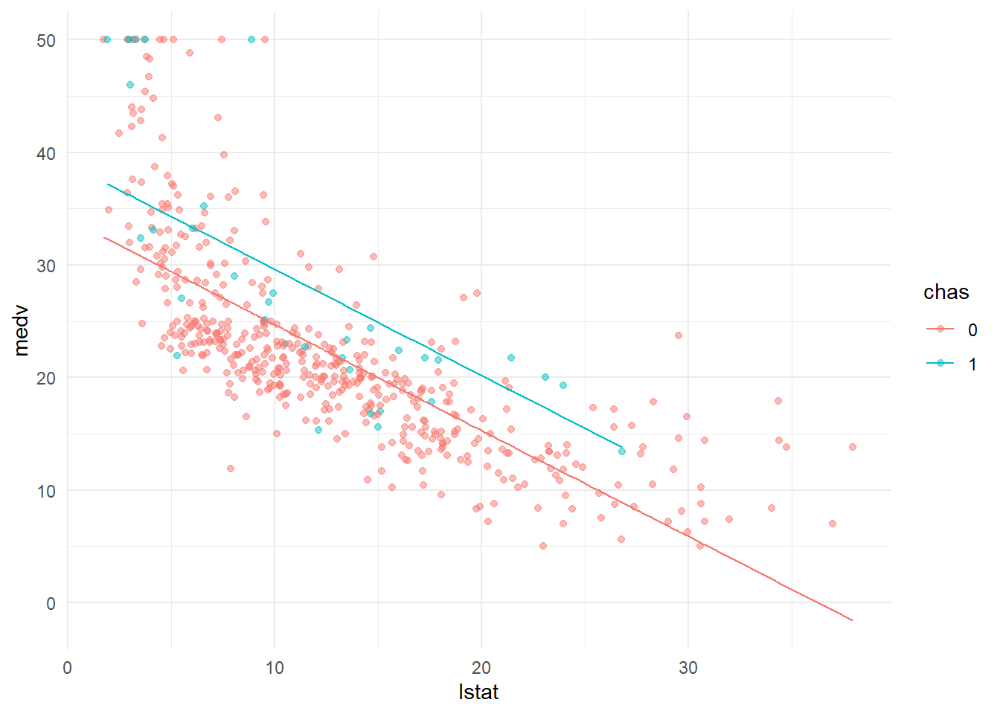

Chapter 20 Mutiple Linear Regression
In this chapter, we will study multiple linear regression, i.e., including more than one independent variable into the regression model.
Load and clean the Boston house price data.
Boston=fread("data/Boston.csv")
# change location from character as factor
Boston[,location:=factor(location)]
# change chas (0/1 variable) from numeric to factor
Boston[,chas:=factor(chas)] 20.1 Mutiple linear regression
Use Boston house dataset as an example. In addition to lstat, we want to include age (i.e., proportion of owner-occupied units built prior to 1940) into the model to predict medv. The age variable captures how established the neighborhood is. The resulting model is thus: \[medv=\beta_0+\beta_1*lstat+\beta_2*age+\epsilon\]
In, R, we can easily estimate the above model as follow:
# multiple linear regression with lstat and age as predictors.
fit1=lm(medv~lstat+age,data=Boston)
summary(fit1)##
## Call:
## lm(formula = medv ~ lstat + age, data = Boston)
##
## Residuals:
## Min 1Q Median 3Q Max
## -15.981 -3.978 -1.283 1.968 23.158
##
## Coefficients:
## Estimate Std. Error t value Pr(>|t|)
## (Intercept) 33.22276 0.73085 45.458 < 2e-16 ***
## lstat -1.03207 0.04819 -21.416 < 2e-16 ***
## age 0.03454 0.01223 2.826 0.00491 **
## ---
## Signif. codes: 0 '***' 0.001 '**' 0.01 '*' 0.05 '.' 0.1 ' ' 1
##
## Residual standard error: 6.173 on 503 degrees of freedom
## Multiple R-squared: 0.5513, Adjusted R-squared: 0.5495
## F-statistic: 309 on 2 and 503 DF, p-value: < 2.2e-16As seen, the coefficient of both lstat and age are significant (because their p-value is less than 0.05) in explaining the variation in house price.
Let’s plot the fitted value to say how the model fits the house price data better than a simple linear regression model.
# the simple regression with only lstat as predictor
fit0=lm(medv~lstat, data=Boston)
plot(Boston$lstat, Boston$medv)
points(Boston$lstat, fitted(fit0), col="black", type = "l")
points(Boston$lstat, fitted(fit1), col="red", cex=0.5)
When including age, the fitted line is no longer a straight line. This is because for houses with same lstat may be located in region with different age, thus having different medv. Thus, multiple linear regression utilize variation in multiple independent variables to explain variation in dependent varaible.
We can further include all independent variables in the data to construct the multiple linear regression. Here, “.” is a special character which denotes all independent variables in the dataset so that we do not need to type all variables.
##
## Call:
## lm(formula = medv ~ ., data = Boston)
##
## Residuals:
## Min 1Q Median 3Q Max
## -15.3580 -2.8810 -0.6743 1.7674 27.4797
##
## Coefficients:
## Estimate Std. Error t value Pr(>|t|)
## (Intercept) 2.817e+01 5.102e+00 5.522 5.46e-08 ***
## crim -6.652e-02 3.221e-02 -2.065 0.039448 *
## zn 4.365e-02 1.428e-02 3.056 0.002364 **
## indus -5.592e-02 6.109e-02 -0.915 0.360405
## chas1 3.053e+00 8.720e-01 3.501 0.000505 ***
## nox -1.555e+01 3.877e+00 -4.011 6.98e-05 ***
## rm 4.105e+00 4.200e-01 9.774 < 2e-16 ***
## age -2.011e-03 1.343e-02 -0.150 0.880963
## dis -1.483e+00 2.035e-01 -7.287 1.28e-12 ***
## rad 3.848e-01 2.390e-01 1.610 0.107971
## tax 1.507e-04 2.504e-03 0.060 0.952039
## ptratio -8.025e-01 1.329e-01 -6.039 3.08e-09 ***
## black 8.419e-03 2.731e-03 3.083 0.002166 **
## lstat -5.216e-01 5.173e-02 -10.084 < 2e-16 ***
## locationnorth 4.462e-01 6.151e-01 0.725 0.468563
## locationsouth -6.476e-01 6.197e-01 -1.045 0.296563
## locationwest -6.480e-01 6.265e-01 -1.034 0.301527
## ---
## Signif. codes: 0 '***' 0.001 '**' 0.01 '*' 0.05 '.' 0.1 ' ' 1
##
## Residual standard error: 4.824 on 489 degrees of freedom
## Multiple R-squared: 0.7336, Adjusted R-squared: 0.7249
## F-statistic: 84.17 on 16 and 489 DF, p-value: < 2.2e-16plot(Boston$lstat, Boston$medv)
points(Boston$lstat, fitted(fit0), col="black", type = "l")
points(Boston$lstat, fitted(fit1), col="red", cex=0.5)
points(Boston$lstat, fitted(fit2), col="blue", cex=0.5)
The plot above demonstrates the advantage of multiple linear regression. Including more predictors means less variation is left in the error terms; thus we can better explain the variation in dependent variables through the model.
There is a very useful shortcut to construct multiple linear regression. E.g., we want to construct a regression model with all independent variables except dis (weighted mean of distances to five Boston employment centres). As the correlation matrix shows, dis is highly correlated with indus, nox and age. In other words, the variation in dis is likely captured by indus, nox and age; including dis may potentially cause multicollinearity. In R, “.-dis” mean all independent variable except dis:
##
## Call:
## lm(formula = medv ~ . - dis, data = Boston)
##
## Residuals:
## Min 1Q Median 3Q Max
## -16.2404 -2.8241 -0.8356 1.6835 28.9419
##
## Coefficients:
## Estimate Std. Error t value Pr(>|t|)
## (Intercept) 14.8713686 5.0113756 2.968 0.003149 **
## crim -0.0368025 0.0336076 -1.095 0.274027
## zn 0.0014007 0.0137296 0.102 0.918783
## indus 0.0334688 0.0629428 0.532 0.595151
## chas1 3.1689788 0.9170118 3.456 0.000596 ***
## nox -7.2861413 3.8996165 -1.868 0.062299 .
## rm 4.5156560 0.4377778 10.315 < 2e-16 ***
## age 0.0267528 0.0134972 1.982 0.048026 *
## rad 0.3180850 0.2511572 1.266 0.205944
## tax 0.0001155 0.0026337 0.044 0.965047
## ptratio -0.8915436 0.1391838 -6.406 3.52e-10 ***
## black 0.0088820 0.0028717 3.093 0.002095 **
## lstat -0.5376894 0.0543571 -9.892 < 2e-16 ***
## locationnorth 0.3880958 0.6469543 0.600 0.548863
## locationsouth -0.9745294 0.6501057 -1.499 0.134509
## locationwest -0.6973450 0.6589279 -1.058 0.290439
## ---
## Signif. codes: 0 '***' 0.001 '**' 0.01 '*' 0.05 '.' 0.1 ' ' 1
##
## Residual standard error: 5.074 on 490 degrees of freedom
## Multiple R-squared: 0.7047, Adjusted R-squared: 0.6957
## F-statistic: 77.96 on 15 and 490 DF, p-value: < 2.2e-1620.2 Categorical variables
Now, let’s draw our attention on the variable “location”. This is a categorical variable in R, and it takes only 4 value; east, north, south, west. Note that, we have saved this variable as factor, which is the data type in R to save categorical variables.
We can check the frequency of the location variable as belows:
##
## east north south west
## 119 132 130 125In the previous model, we see that R automatically create three dummy variables: locationnorth, locationsouth, locationwest to represents the locations. The dummy variables take value of only 0/1. E.g., locationnorth=1 means the location is north. You many wondering why R does not create locationeast dummy. This is because the location=east can be represented by locationnorth locationsouth and locationwest all equal to 0. The location=east is called the base case. In general, for a categorical variable with n levels, n-1 dummy variables will be created, and the left level is the base level.
To have a better understand of the categorical variables in regression, let’s regress medv on lstat and location:
##
## Call:
## lm(formula = medv ~ lstat + location, data = Boston)
##
## Residuals:
## Min 1Q Median 3Q Max
## -14.219 -4.033 -1.411 2.067 24.597
##
## Coefficients:
## Estimate Std. Error t value Pr(>|t|)
## (Intercept) 34.94062 0.76892 45.441 <2e-16 ***
## lstat -0.95546 0.03874 -24.660 <2e-16 ***
## locationnorth 0.46252 0.78379 0.590 0.555
## locationsouth -1.29300 0.78799 -1.641 0.101
## locationwest -0.43233 0.79546 -0.543 0.587
## ---
## Signif. codes: 0 '***' 0.001 '**' 0.01 '*' 0.05 '.' 0.1 ' ' 1
##
## Residual standard error: 6.2 on 501 degrees of freedom
## Multiple R-squared: 0.5492, Adjusted R-squared: 0.5456
## F-statistic: 152.6 on 4 and 501 DF, p-value: < 2.2e-16Again, R automatically create three dummy variables: locationnorth, locationsouth, locationwest to represents the locations. How to interpret the coefficients of locationnorth, locationsouth, locationwest?
## lstat location medv_fit
## 1: 4.98 west 29.75011
## 2: 9.14 east 26.20773
## 3: 4.03 west 30.65779
## 4: 2.94 south 30.83857
## 5: 5.33 south 28.55502
## 6: 5.21 south 28.66968ggplot()+
geom_point(data=Boston, aes(lstat,medv, color=location), alpha=0.5)+
geom_line(data=fit_dt[location=="north"], aes(lstat,medv_fit, color=location))+
geom_line(data=fit_dt[location=="south"], aes(lstat,medv_fit, color=location))+
geom_line(data=fit_dt[location=="west"], aes(lstat,medv_fit, color=location))+
geom_line(data=fit_dt[location=="east"], aes(lstat,medv_fit, color=location))+
theme_minimal()
The above chart demonstrates the coefficients of categorical variables location visually. Each color represents a particular location, the fitted line for different location has different intercept to capture the fact that the average house price at different location is different.
Formally, the coefficient of locationnorth (0.463) means the average house price in the north is 0.463 higher than that in the base case (i.e., in the east). The coefficient of locationsouth (-1.293) means the average house price in the south is 1.293 lower than that in the base case (i.e., in the east). The coefficient of locationwest (-0.432) means the average house price in the south is 0.43233 lower than that in the base case (i.e., in the east).
The great thing about R is that we do not need to manually define dummy variables to represent a categorical variable. R will do that automatically. You just need to understand the coefficients of the dummy variables. However, you must first save the categorical variable into factor to tell R that is a categorical variable.
20.3 Interprate coefficients - Keeping all other variables the same
Now, let’s look into the estimated coefficients of the mutliple linear regression model. For the first model, \(medv=\beta_0+\beta_1lstat+\beta_2age+\epsilon\), our estimates suggests the following best linear line: \[medvFit=33.22-1.032lstat+0.034age+\epsilon\] Both lstat and age has p-value less than 5%, thus they both are significant predictors.
Here -1.032l represents the marginal impact of lstat on medv: keeping everything else the same, if medv increases by 1, then medv will decreases by -1.0321. Similarly, keeping everything else the same, if age increase by 1, medv will increase by 0.034.
It is very important to note the phrase “keeping everything else the same”. It means we only allow one variable to change a time when interpreting the coefficients. However, it is sometime hard to keep all other variables unchanged. In many cases it is even not be possible. E.g., we want to predict the medv using their \(lstat\), \(lstat^2\), \(sqft\) and \(bedrooms\). \[medv=\beta_0+\beta_1*lstat+\beta_2 *lstat^2+\beta_3*sqft+\beta4*bedrooms+\epsilon\]
However, it is hard to argument keeping \(sqft\) unchanged while changing \(bedrooms\). And you cannot keep \(medv^2\) unchanged while changing \(lstat\). Thus, you need to be cautions to determine whether keeping all other variable unchanged is possible when interpreting the coefficients.
20.4 Multicollinearity
Our linear regression model will have the multicollinearity problem when two or more independent variables are highly correlated because the regression does not know which variable to “credit” with changes in dependent variable.
Let’s look at one example. Suppose we are trying regress height of a person on his/her left foot and right foot: \(height=\beta_0+\beta_1*left+\beta_2* right+\epsilon\)
# simulate the data
right=rnorm(50, 20.5, 2)
left=right+rnorm(50, 0, 0.5)
height=left*7.9+rnorm(50,0,3)
height_dat=data.table(right, left, height)
head(height_dat)## right left height
## 1: 19.26421 19.47743 157.1016
## 2: 15.91814 15.78225 125.3999
## 3: 20.85503 20.84592 161.5192
## 4: 20.97105 20.27620 162.2886
## 5: 18.20132 18.18502 143.9461
## 6: 23.90023 24.77126 191.7123Let’s examine the correlation matrix and scatter plot matrix:


As seen in the scatter plot, both right and left are highly correlated with height, i.e., both are good predictor of height. However, right and left are also highly correlated. If we regress heigh on both left and right, we have:
##
## Call:
## lm(formula = height ~ left + right, data = height_dat)
##
## Residuals:
## Min 1Q Median 3Q Max
## -6.6050 -2.3737 0.3324 1.7371 8.1379
##
## Coefficients:
## Estimate Std. Error t value Pr(>|t|)
## (Intercept) 2.2345 4.4606 0.501 0.619
## left 8.2889 0.9246 8.965 9.63e-12 ***
## right -0.4999 0.9763 -0.512 0.611
## ---
## Signif. codes: 0 '***' 0.001 '**' 0.01 '*' 0.05 '.' 0.1 ' ' 1
##
## Residual standard error: 2.96 on 47 degrees of freedom
## Multiple R-squared: 0.9681, Adjusted R-squared: 0.9668
## F-statistic: 714.2 on 2 and 47 DF, p-value: < 2.2e-16The result is not what we expected becuase the coefficient of “right” is negative. This is because left and right are almost always changing together, thus the regression model does not know which one to “credit” with changes in height. The possible solution is to drop the one of the independent variable that is highly correlated with other independent variables. This will not lead to much loss of information because the variation in the dropped variable is mostly captured by the ones that are highly correlated with the dropped variable.
While in most cases it is impossible to see absolutely no correlations among independent variables. But we will begin to worry about multicollinearity if correlation between independent variable is > 0.70 or < -0.70. We definitely need to drop some independent variables if correlation between them is > 0.90 or < -0.90.
While, it seems that we are again facing the problem of selecting the best set of independent variables into our regression model. This time, we are selecting variables to aviod multicollinearity. In the next chapter, we will start to discuss how to select the best linear regression model.
20.5 Excerise
chas is another categorical variable to indicate whether the house is on the charles river. Develop a linear regression model with lstat and chas, and interpret the coefficient of chas.
20.5.2 Visualize the house price with ggplot2
Create a scatter plot between medv and lstat, mark the color of points based on chas.

20.5.3 estimate the linear regression model
##
## Call:
## lm(formula = medv ~ lstat + chas, data = Boston)
##
## Residuals:
## Min 1Q Median 3Q Max
## -14.782 -3.798 -1.286 1.769 24.870
##
## Coefficients:
## Estimate Std. Error t value Pr(>|t|)
## (Intercept) 34.09412 0.56067 60.809 < 2e-16 ***
## lstat -0.94061 0.03804 -24.729 < 2e-16 ***
## chas1 4.91998 1.06939 4.601 5.34e-06 ***
## ---
## Signif. codes: 0 '***' 0.001 '**' 0.01 '*' 0.05 '.' 0.1 ' ' 1
##
## Residual standard error: 6.095 on 503 degrees of freedom
## Multiple R-squared: 0.5626, Adjusted R-squared: 0.5608
## F-statistic: 323.4 on 2 and 503 DF, p-value: < 2.2e-1620.5.4 plot the fitted line
## lstat chas medv_fit
## 1: 4.98 0 29.40987
## 2: 9.14 0 25.49692
## 3: 4.03 0 30.30345
## 4: 2.94 0 31.32872
## 5: 5.33 0 29.08065
## 6: 5.21 0 29.19353ggplot()+
geom_point(data=Boston, aes(lstat,medv, color=chas), alpha=0.5)+
geom_line(data=fit_dt[chas==1], aes(lstat,medv_fit, color=chas))+
geom_line(data=fit_dt[chas==0], aes(lstat,medv_fit, color=chas))+
theme_minimal()
The ultimate question: what is the coefficient of chase is? Is it significant? What does it mean?